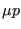
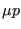

Keyword type: model definition, surface interaction and step
With this option the friction behavior of a surface interaction can be defined. The friction behavior is optional for contact analyses. There are no parameters.
The frictional behavior defines the relationship between the shear stress in the contact area and the relative tangential displacement between the slave and the master surface. It is characterized by a linear range with tangent  (stick slope) for small relative displacements (stick) followed by a horizontal upper bound (slip) given by , where
(stick slope) for small relative displacements (stick) followed by a horizontal upper bound (slip) given by , where  is the friction coefficient and
is the friction coefficient and  the local pressure (Figure 133).
the local pressure (Figure 133).  is dimensionless and usually takes values between 0.1 and 0.5,
is dimensionless and usually takes values between 0.1 and 0.5,  has the dimension of force per volume and should be chosen to be about 100 times smaller than the spring constant. If no value for
has the dimension of force per volume and should be chosen to be about 100 times smaller than the spring constant. If no value for  is specified a default is taken equal to the first elastic constant of the first encountered material in the input deck divided by 2.
is specified a default is taken equal to the first elastic constant of the first encountered material in the input deck divided by 2.
For face-to-face penalty contact with PRESSURE-OVERCLOSURE=TIED the value of the friction coefficient is irrelevant.
First line:
Following line for all types of analysis except modal dynamics:
Example: *FRICTION 0.2,5000.
defines a friction coefficient of 0.2 and a stick slope of 5000.
Example files: friction1, friction2.